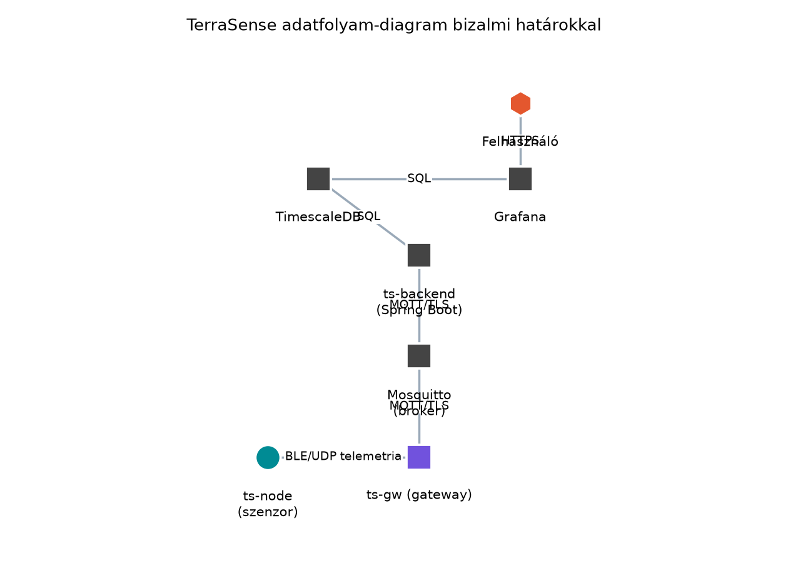

A TerraSense rendszer üvegházakat monitoroz: a ts-node
szenzorcsomópontok BLE vagy UDP csatornán küldenek telemetriát a
ts-gw gatewaynek, amely MQTT-n továbbítja a brokerhez,
onnan a ts-backend feldolgozza, tárolja és megjeleníti. Egy
kompromittált szenzor nemcsak hamis adatokat küldhet, hanem a gatewayen
keresztül bejuthat a felhős hálózatba, vagy hamis parancsot juttathat el
az öntözőszelephez. A biztonsági követelményeket az Nem funkcionális követelmények alfejezet
rögzítette, de a követelményekből nem derül ki automatikusan, hogy
pontosan mit és milyen sorrendben kell védeni. A A
gateway szerepe alfejezetben meghatároztuk, hogy a
ts-gw biztonsági határ, az Ingest:
MQTT-ből a backendbe, idempotensen alfejezetben pedig láttuk a
backend belépési pontját. Most ezeket a komponenseket egyetlen
biztonsági modellben egyesítjük, hogy a fenyegetéseket szisztematikusan
azonosítsuk, és kockázat alapján rangsoroljuk az
ellenintézkedéseket.
Definíció. A támadási felület (attack surface) a rendszer azon pontjainak összessége, ahol egy támadó adatot vihet be, adatot olvashat ki, vagy a rendszer működését befolyásolhatja. Ide tartoznak a hálózati interfészek, a fizikai hozzáférést biztosító csatlakozók (pl. debug port), a szoftveres API-k, a rádiós csatornák és az emberi folyamatok is.
Definíció. A bizalmi határ (trust boundary) olyan vonal a rendszerben, amely két, eltérő megbízhatósági szintű zónát választ el. Az adatfolyamok keresztezhetik a határt, de ilyenkor a küldőt és a fogadót nem tekintjük egyformán megbízhatónak: a határ átlépésekor érvényesíteni kell az azonosítást, a sértetlenséget és a jogosultságot.
Definíció. A STRIDE a Microsoft által bevezetett fenyegetés-osztályozási modell, amely hat kategóriát különböztet meg:
A módszer lépései: (1) adatfolyam-diagram készítése a rendszer komponenseivel, adattárolóival, adatfolyamaival és bizalmi határaival; (2) minden adatfolyamra, tárolóra és komponensre STRIDE-kérdések feltevése; (3) a fenyegetések kockázatának értékelése; (4) ellenintézkedések hozzárendelése.
A TerraSense adatfolyam-diagramja az alábbi elemekből áll:

A diagramon látható, hogy a ts-node fizikailag az üvegházban van, így a támadó közvetlenül hozzáférhet. A ts-gw az edge zónában található, szintén fizikailag elérhető lehet, de általában zártabb környezetben. A Mosquitto, a ts-backend, a TimescaleDB és a Grafana a felhőben vagy a helyi szerverteremben futnak, és erősebb fizikai védelemmel rendelkeznek. A bizalmi határok tehát:
A fenyegetésmodellezés mélységét a rendszer kritikussága és a fejlesztési fázis határozza meg. A TerraSense esetében a modellt a tervezés során készítjük el, és minden jelentős változásnál frissítjük.
| Szempont | Lehetőség | Előny | Hátrány | Mikor válasszuk |
|---|---|---|---|---|
| Modellezési módszer | STRIDE | Szisztematikus, jól dokumentált, kategóriákra bont | Nem ad konkrét támadási forgatókönyveket | Kezdeti tervezéshez, fenyegetésleltárhoz |
| Attack tree | Támadási célokból indul ki, mélységi elemzés | Időigényes, könnyen túlbonyolítható | Kritikus alrendszerek mély elemzéséhez | |
| Kockázatértékelés | Kvalitatív (alacsony/közepes/magas) | Gyors, egyszerű | Pontatlan | Korai fázisban, gyors priorizáláshoz |
| Kvantitatív (pl. CVSS, DREAD) | Számszerű, összehasonlítható | Több adatot igényel, szubjektív lehet | Érett rendszereknél, riportokhoz | |
| Hatókör | Csak az eszköz | Kevesebb erőforrás | A rendszerszintű kockázatok kimaradnak | Egyetlen komponens fejlesztésekor |
| Teljes adatút | Átfogó kép | Sok szereplő, bonyolult | Integrációs tervezéskor, biztonsági audit előtt |
A TerraSense-nél a teljes adatútra kvalitatív STRIDE-modellt készítünk, mert a rendszer még fejlesztés alatt áll, és a cél az ellenintézkedések priorizálása.
Munkakönyvtár: ~/iot-labor/i053
mkdir -p ~/iot-labor/i053 && cd ~/iot-labor/i053A modellt egy Markdown-fájlban rögzítjük, amelyet a későbbi biztonsági alfejezetek ellenintézkedés-térképként használnak. A fájl tartalma az alábbi.
# TerraSense fenyegetésmodell (i053)
## Adatfolyam-diagram
A komponensek: ts-node (szenzor), ts-gw (gateway), Mosquitto (broker), ts-backend (Spring Boot),
TimescaleDB, Grafana. A bizalmi határok: eszköz-edge, edge-felhő, felhő belső, fizikai hozzáférés.
## STRIDE-táblázat
| Adatfolyam/elem | STRIDE | Fenyegetés | Kockázat | Ellenintézkedés |
|---|---|---|---|---|
| BLE/UDP telemetria (ts-node → ts-gw) | S | Hamis szenzor bejelentkezik ts-node-ként | Magas | Eszközazonosítás (i056), üzenet-hitelesítés (i055) |
| | T | A telemetria adatot módosítják | Közepes | TLS/DTLS (i057), séma-ellenőrzés (i032) |
| | I | Az adat lehallgatható | Közepes | Titkosított csatorna (i057) |
| | D | Rádiós zavarás, csomagelárasztás | Alacsony | Frekvenciaváltás, forgalomkorlátozás |
| ts-node firmware/flash | T | Illetéktelen firmware-módosítás | Magas | Secure boot (i058), aláírt frissítés (i060) |
| | E | Debug porton root jog | Magas | Debug letiltása, hozzáférés-védelem (i056) |
| | I | Flash kiolvasása (kulcsok) | Magas | Titkos kulcs védett tárolóban (i056) |
| MQTT (ts-gw → broker) | S | Hamis gateway csatlakozik | Magas | mTLS, tanúsítvány-alapú hitelesítés (i057) |
| | T | Üzenet módosítása | Közepes | TLS integritásvédelem (i057) |
| | I | Topic-tartalom lehallgatása | Közepes | TLS titkosítás (i057) |
| | D | Broker elárasztása | Közepes | Rate limiting, QoS 0/1 szabályok |
| MQTT (broker → backend) | S | Hamis backend feliratkozik | Magas | mTLS, ACL a brokeren (i057) |
| | T | Üzenet módosítása | Közepes | TLS integritásvédelem (i057) |
| | I | Topic-tartalom lehallgatása | Közepes | TLS titkosítás (i057) |
| REST API (Grafana → backend) | S | Hamis felhasználó | Magas | OAuth2/OIDC, RBAC |
| | E | Jogosultság-kiterjesztés | Közepes | Szerepkörök, audit napló (i062) |
| Adatbázis (backend → TimescaleDB) | I | SQL injection, adatszivárgás | Magas | Paraméterezett lekérdezések, hálózati szegmentáció |
| | T | Adatbázis-tartalom módosítása | Közepes | Hozzáférés-vezérlés, audit |
| Parancsok lefelé (backend → broker → ts-gw → ts-node) | S | Hamis parancs | Magas | Parancs-aláírás, eszközazonosítás (i055, i056) |
| | T | Parancs módosítása | Magas | TLS/mTLS (i057), séma-ellenőrzés |
| | D | Parancs-újraküldés, elárasztás | Közepes | Idempotencia, időkorlát (i049) |
## Kockázatmátrix
A kockázat = valószínűség × hatás, kvalitatív skálán.
| Valószínűség \ Hatás | Alacsony | Közepes | Magas |
|---|---|---|---|
| Alacsony | Alacsony | Alacsony | Közepes |
| Közepes | Alacsony | Közepes | Magas |
| Magas | Közepes | Magas | Kritikus |
A fenti táblázatban a kockázatokat ehhez a mátrixhoz igazítottuk.
## Ellenintézkedés-térkép
Az alábbi táblázat a fenyegetéseket a későbbi alfejezetekben tárgyalt ellenintézkedésekhez rendeli.
| Fenyegetés | Ellenintézkedés | Alfejezet |
|---|---|---|
| Hamis eszköz vagy gateway | X.509 tanúsítvány, mTLS | [Eszközidentitás: X.509-tanúsítványok, PKI és kulcstárolás](#i056), [Biztonságos kapcsolat: TLS 1.3, mTLS és DTLS](#i057) |
| Firmware-módosítás | Secure boot, aláírt firmware | [Biztonságos boot és firmware-aláírás](#i058) |
| Kulcsok kiszivárgása | Kulcstárolás, hardveres védelem | [Eszközidentitás: X.509-tanúsítványok, PKI és kulcstárolás](#i056) |
| Parancs-hamisítás | Aláírás, hitelesítés | [Kriptográfiai alapok](#i055), [Eszközidentitás](#i056) |
| Adatlehallgatás | TLS 1.3 / DTLS 1.3 | [Biztonságos kapcsolat](#i057) |
| DoS a brokeren | Rate limiting, QoS-szabályok | [MQTT QoS, munkamenetek, retain, Last Will](#i027) (ellenőrizendő) |
| Jogosultság-kiterjesztés | RBAC, audit | [Megfigyelhetőség](#i062) |
| SQL injection | Paraméterezett lekérdezések | [Idősoros adatbázisok](#i045) |Ez a fájl a továbbvitt eredmény. A későbbi alfejezetek ebből a térképből indulnak ki, amikor az egyes ellenintézkedéseket implementálják. A Tipikus IoT-sebezhetőségek és a szabályozás alfejezet a sebezhetőségek valós előfordulását és a jogi keretet tárgyalja, a Kriptográfiai alapok a kriptográfiai primitíveket, az Eszközidentitás a tanúsítványokat és a kulcstárolást, a Biztonságos boot és firmware-aláírás pedig a firmware-integritást.
A fenti STRIDE-táblázatban minden adatfolyamra és tárolóra megvizsgáltuk a hat kategóriát. Nem minden kombináció releváns, de a fontos fenyegetéseket rögzítettük. A kockázatértékelés kvalitatív: a valószínűséget és a hatást az iparági tapasztalatok és a TerraSense konkrét üzemeltetési környezete alapján becsültük. Az értékeket a rendszer változásakor felül kell vizsgálni.
A fenyegetésmodell akkor jó, ha:
Tipikus hibatünetek és javításuk:
| Tünet | Ok | Javítás |
|---|---|---|
| A STRIDE-táblázatban sok üres cella van | Nem minden adatfolyamot vizsgáltunk meg | Menjünk végig minden adatfolyamon és tárolón, és tegyük fel a STRIDE-kérdéseket |
| A kockázati besorolás mindenütt „magas” | Nem választottuk szét a valószínűséget és a hatást | Használjunk külön skálát, és indokoljuk a becslést |
| Az ellenintézkedések nem kapcsolódnak konkrét technológiához | Csak általános javaslatokat írtunk | Hivatkozzunk a későbbi alfejezetekre, és adjunk konkrét megoldást |
| A modell nem tartalmazza a fizikai hozzáférést | Csak a hálózati rétegre koncentráltunk | Vegyük fel a debug portokat, a flash memóriát és a szenzorok manipulálását |
A modell ellenőrzéséhez a TerraSense esetében egy egyszerű
áttekintést végezhetünk: nyissuk meg a
terrasense-fenyegetesmodell.md fájlt, és ellenőrizzük, hogy
minden adatfolyam szerepel-e a STRIDE-táblázat első oszlopában. A
diagramon hat adatfolyam és négy adattároló látható; a táblázatban ezek
mindegyike megjelenik, tehát a lefedettség teljes.
Csak a szoftveres támadási felületet nézzük. Az IoT-eszközök fizikailag a támadó kezében lehetnek. A debug port, a flash kiolvasása, a szenzorok hamis jelekkel való befolyásolása ugyanolyan fontos, mint a hálózati támadások. A TerraSense ts-node az üvegházban bárki által hozzáférhető, ezért a fizikai támadásokat a modellben explicit módon szerepeltetni kell.
A bizalmi határt a hálózati határral azonosítjuk. A gateway és a broker közötti TLS kapcsolat nem jelenti azt, hogy a gateway teljesen megbízható. Ha a gatewayt kompromittálják, a TLS alagút belsejében a támadó szabadon mozoghat. A bizalmi határ a komponensek közötti bizalmi szinteket jelöli, nem a titkosítás meglétét.
Minden fenyegetést magas kockázatúnak minősítünk. Ha minden magas, akkor nem tudunk priorizálni. A kockázatértékelés lényege, hogy a valószínűséget és a hatást külön becsüljük, és a magas kockázatú tételekre összpontosítsunk. A TerraSense esetében például a rádiós zavarás valószínűsége alacsony, mert az üvegház zárt területen van, így a kockázat alacsony, még ha a hatás közepes is.
A fenyegetésmodellt egyszer elkészítjük, és soha nem frissítjük. Az architektúra változásával új adatfolyamok, új komponensek jelennek meg. A modellt minden jelentős változásnál felül kell vizsgálni, különben a későbbi biztonsági döntések téves alapokon nyugszanak.
Magyarázza el, miért tekintjük bizalmi határnak a ts-gw és a Mosquitto broker közötti MQTT kapcsolatot, annak ellenére, hogy TLS-t használunk.
Egészítse ki a STRIDE-táblázatot a parancsok lefelé irányuló adatfolyamára vonatkozóan: azonosítsa a Spoofing, Tampering, Repudiation és Denial of Service fenyegetéseket, és rendeljen hozzájuk ellenintézkedést a későbbi alfejezetekre hivatkozva.
A ~/iot-labor/i053/terrasense-fenyegetesmodell.md
fájlban vegyen fel egy új fenyegetést: a ts-node szenzor hamis mérési
adatokat küld (például egy támadó rádiós csatornán keresztül hamis
üzenetet injektál). Határozza meg a STRIDE-kategóriát, becsülje meg a
kockázatot, és rendeljen hozzá ellenintézkedést a Kriptográfiai alapok vagy az Eszközidentitás alfejezetre hivatkozva.
Egy fejlesztő a következő STRIDE-táblázatot készítette a TerraSense-hez, de kihagyott egy fontos elemet. Azonosítsa a hiányzó adatfolyamot vagy tárolót, és indokolja, miért kritikus a biztonság szempontjából.
A fejlesztő táblázata:
| Adatfolyam/elem | STRIDE | Fenyegetés |
|---|---|---|
| BLE/UDP telemetria | S, T, I, D | Hamis eszköz, módosítás, lehallgatás, zavarás |
| MQTT (ts-gw → broker) | S, T, I, D | Hamis gateway, módosítás, lehallgatás, elárasztás |
| MQTT (broker → backend) | S, T, I, D | Hamis backend, módosítás, lehallgatás, elárasztás |
| REST API | S, E | Hamis felhasználó, jogosultság-kiterjesztés |
A TLS biztosítja a kapcsolat titkosságát, integritását és a szerver hitelesítését, de nem szünteti meg a bizalmi határt. A bizalmi határ azt jelöli, hogy a kapcsolat két oldalán álló komponensek eltérő megbízhatósági szintűek. A ts-gw az edge zónában fut, és fizikailag hozzáférhető lehet, míg a Mosquitto a felhőben vagy védett szerverteremben van. Ha a ts-gw kompromittálódik, a támadó a TLS alagúton belül érvényes üzeneteket küldhet, mert a gateway rendelkezik a hitelesítő adatokkal. Ezért a bizalmi határ továbbra is fennáll: a brokernek nem szabad megbíznia a gatewayben, hanem minden üzenetet a saját szabályai szerint kell érvényesíteni, például topic-ACL-ekkel és tartalom-ellenőrzéssel. A TLS csak a szállítási réteg biztonságát adja, de a komponens kompromittálódása esetén nem véd.
A parancsok lefelé (backend → broker → ts-gw → ts-node) adatfolyamra:
| STRIDE | Fenyegetés | Ellenintézkedés | Alfejezet |
|---|---|---|---|
| Spoofing | Hamis backend parancsot ad ki | Parancs-aláírás, backend hitelesítés | Kriptográfiai alapok, Eszközidentitás |
| Tampering | A parancs tartalmát módosítják | TLS/mTLS, séma-ellenőrzés | Biztonságos kapcsolat |
| Repudiation | A parancs kiadója letagadja a műveletet | Audit napló, aláírt parancsok | Megfigyelhetőség |
| Denial of Service | Parancs-újraküldés, elárasztás | Idempotencia, időkorlát, rate limiting | Parancsok és konfiguráció lefelé |
A fájlban a STRIDE-táblázat BLE/UDP telemetria sorához hozzáadjuk a Spoofing kategóriához a hamis mérési adatok injektálását:
| BLE/UDP telemetria (ts-node → ts-gw) | S | Hamis szenzor bejelentkezik ts-node-ként, vagy hamis mérési adatokat injektál | Magas | Eszközazonosítás (i056), üzenet-hitelesítés (i055) |Indoklás: a támadó a rádiós csatornán hamis üzenetet küldhet, amelyet a gateway nem tud megkülönböztetni a valóditól. Az ellenintézkedés az üzenet-hitelesítés (például MAC vagy aláírás) és az eszközazonosítás, amelyet a későbbi alfejezetek tárgyalnak.
A táblázatból hiányzik a ts-node firmware/flash mint adattároló/elem, valamint az adatbázis (backend → TimescaleDB) adatfolyam. A legkritikusabb hiány a firmware/flash, mert az IoT-eszközök fizikailag hozzáférhetők, és a firmware illetéktelen módosítása a teljes eszköz kompromittálódásához vezethet. A STRIDE-modellben a Tampering és Elevation of Privilege kategóriákat itt kell vizsgálni: a támadó módosíthatja a firmware-t (T), vagy a debug porton keresztül root jogot szerezhet (E). Az ellenintézkedés a secure boot és az aláírt firmware-frissítés, amelyet a Biztonságos boot és firmware-aláírás alfejezet tárgyal.
Az alfejezet elkészítette a TerraSense rendszer fenyegetésmodelljét.
Elkészült az adatfolyam-diagram a bizalmi határokkal: eszköz-edge,
edge-felhő, felhő belső és fizikai hozzáférés. A STRIDE-táblázat minden
adatfolyamra, adattárolóra és komponensre azonosítja a megszemélyesítés,
illetéktelen módosítás, letagadhatóság, információszivárgás,
szolgáltatásmegtagadás és jogosultság-kiterjesztés fenyegetéseit. A
kockázatértékelés kvalitatív mátrix alapján rangsorolja a tételeket. A
továbbvitt eredmény a
~/iot-labor/i053/terrasense-fenyegetesmodell.md fájl, amely
az ellenintézkedés-térképet tartalmazza, és a későbbi alfejezetek – Tipikus IoT-sebezhetőségek és a szabályozás, Kriptográfiai alapok, Eszközidentitás, Biztonságos
boot és firmware-aláírás – ebből indulnak ki. A modell a fizikai
hozzáférést is explicit módon kezeli, mert a ts-node az üvegházban bárki
által elérhető.